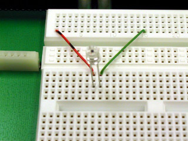
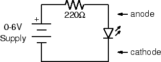
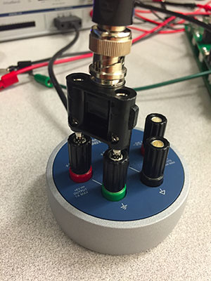
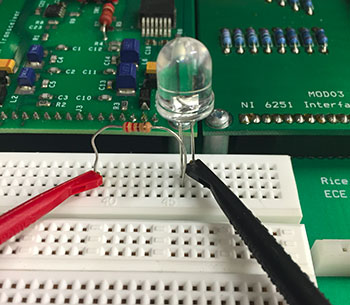
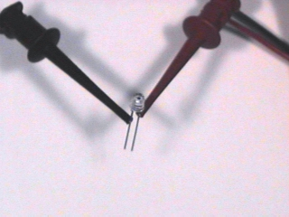

Experiment 2.3
Optoelectrical Signal Sources and Sinks
Since we will be building an optical communication system, we will need some devices for converting electrical signals to and from light, as well as to and from sound. We will look at two: the photodiode, which converts light into an electrical signal, and the light emitting diode (LED) which converts electric current to light.
Equipment
- Photodiode
- Red LED
Part A: The Photodiode
-
Connect the short lead (cathode) of the photodiode to ground and the long lead (anode) to CH1 of the scope. You can use the BNC clip leads for this, but the better way (which leaves your hands free) is to the plug it into the breadboard and wire it to the appropriate interface pins (pin 1 to anode, pin 14 to cathode).
 -
View the DC signal on the scope. Note the voltage produced by photodiode. How does it change when you cover the photodiode with your hand?
-
Set
CH1to AC. What are the amplitude and frequency of the signal?Tip
Click on the ruler by the bottom left corner of the oscilloscope view for helpful measurement tools.
-
Explain the waveform you observed in the previous step. Switch back to DC.
Part B: Light Emitting Diode
-
Using a 220-ohm (red-red-brown) resistor and your red LED, wire the following circuit:
 -
First wire the resistor and LED on the breadboard. There are two ways to connect the power supply to the circuit (use one or the other not both):
- The first way: Plug your BNC-banana adapter into the \(6V\) power supply terminals. Note: There is a bump on one side of the adapter to denote which prong is connected to ground. Be sure to plug this prong into the black terminal of the power supply.
 Then use the clip leads to connect to the LED and resistor.
 - The other way: Use the BNC adapter as above, but use a BNC patch cord
to connect the power supply to
J1-3. Use two pieces of wire to connect ground (pin 14) to the LED andJ1-3(pin 3) to the resistor.
-
Turn on the power supply. Slowly increase the voltage until you see the LED just begin to glow. Measure the voltage across the LED. If the LED doesn't light by the time the meter on the power supply reads 3 V, check your circuit to make sure the diode is wired in the correct orientation. Unlike a resistor or light bulb, the LED is polarized. The anode must be positive for it to glow. Reverse the LED and verify that this is the case.
-
Set the supply voltage to \(3, 4\), and \(5\) volts. At each step note the brightness of the LED and the voltage across it.
-
Next power the LED with the
FGENinstead of the power supply. Set it to produce a \(100\) Hz square wave with minimum amplitude. -
Increase the amplitude until it begins to glow. Is the glow steady?
-
Slowly reduce the frequency of the
FGEN. At what frequency does noticeable flicker begin? -
How does the number you measured in the previous step relate to the frame rate of television and motion pictures?
Part C: Optical Communication
-
Now connect the photodiode to
CH1of the scope using a BNC-to clip leads cord. -
With the LED still connected to the
FGENas in the previous part, set the frequency to \(100\) Hz. -
Hold the photodiode (pointing down) above the LED (pointing up). Adjust their relative positions to maximize the signal displayed on the scope.
Tip
It may help to shield the components from ambient light with your hand.
-
Describe the waveform. Is it what you would expect?
-
Set the
FGENto produce a triangle wave. Take a screenshot of the waveform. Is it what you expected? -
Reset the
FGENto produce a square wave. What is the maximum distance over which you can transmit a recognizable signal?Tip
Switch to AC signal with higher gain.
-
We have several of the components needed for building an optical communication system. What components are missing? What problems remain to be solved?